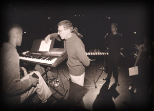
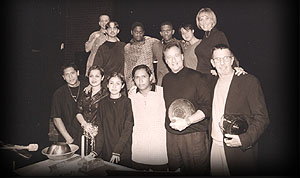

|
ALIEN VOICES CURRICULUM
Soon to invade Schools Everywhere!

Program Description
Alien Voices has chosen to bring this program to
classrooms everywhere because it focuses on more than performance. It is a cross curriculum event that includes literature, history, problem solving, imagination, and teamwork. The productions require little rehearsal time, and are inexpensive to produce.
|
|
 Why Alien Voices?
Eight Alien Voices' scripts were recently published by Dramatic Publishing. In addition, Alien Voices has also produced an instructional video demonstrating their production technique. The scripts and video are now available by contacting Dramatic Publishing at 815.338.7170 or by visiting their website at dramaticpublishing.com.
|
|
Future School Plans? |
| Recently, Alien Voices technique was demonstrated to educators in the California Public School System and received with high praise. |
| We are interested in your thoughs & ideas, so please keep in touch with us! So please email us! |